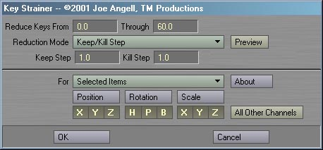
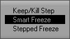
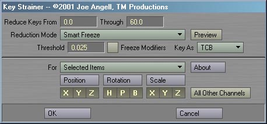
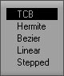
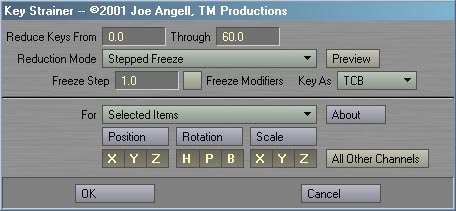
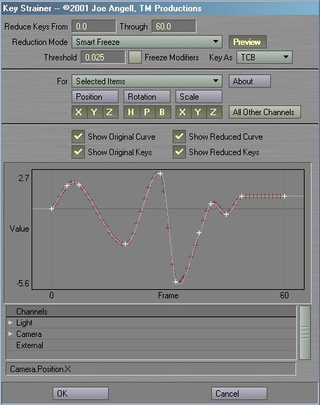
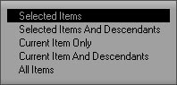

|
To install Key Strainer, just follow these steps:
The basic Key Strainer interface looks very similar to Mot-ify and the delete key panel built into Lightwave. After launching it, you should see an interface like this:  At the top of the interface is the reduction range. All frames between the low and high frames will be reduced.  There are three reduction modes in Key Strainer. The interface above shows the Keep/Kill Step mode. This is a very simple: It skips over a certain number of keyframes, and deletes a certain number of keyframes, repeating this down the range. This is most useful when the channel has a keyframe at every frame, since this only looks at the number of keys and not their times. When using Keep/Kill Step mode, you can enter the number of keys to skip in the Keep Step field, and the number of keys you want to delete in the Kill Step field. If you enter a Keep of 2 and a Kill of 3, then Key Strainer will skip two keys, delete three keys, skip two keys, and so on.   The highest quality reduction mode is Smart Freeze, shown above. This will bake the channel, and then intelligently remove keyframes based on the Threshold value. The higher this value, the fewer keys there will be. If Freeze Modifiers is checked, channel modifiers will also be baked and their keyframes will be reduced. You can pick they spline type for the generated keys with the Keys As. Note that Bezier and TCB values will be set to their defaults, but the different interpolations will still determine how the keys are reduced.
 The final mode, Stepped Freeze, is really just a more flexible baker. It will create a baked motion with a keyframe every frame as determined by the Frame Step field. If Freeze Modifiers is checked, channel modifiers will also be baked and their keyframes will be reduced. You can pick they spline type for the generated keys with the Keys As. Note that Bezier and TCB values will be set to their defaults.
To the right of the reduction mode popup is a Preview button. When enabled, a preview of a single channel will fill the bottom of the interface as shown below, allowing you to get an idea of what the reduction will do to your channels before reducing the. You can turn on and off the orignal or reduced curves or keys using the checkboxes above the preview. The reduced curve is drawn purple with white keys, while the original curve is drawn black with red keys. You can pick which channel you want to preview using the channel list at the bottom of the panel.   The For pop-up is identical to that in Motify, and allows you to pick what items will be affected by the reduction. As with Delete Key and Mot-ify, Key Strainer has buttons to enabled and disable individual channels and groups of channels. Only the selected channels will be processed. You can click the Position, Rotation and Scale buttons to toggle all the channels in that group, and shift-click to invert that group's selection. The All Other Channels toggle is a very powerful feature, but can cause
a lot of damage to your scene if used incorrectly. When you click on it, a message will appear
asking if you're really sure you want it enabled. If you do, then all non-motion channels will
also be processed by Key Strainer (the Position, Rotation and Scale buttons
still determine if the motion channels are processed). This includes all envelopes applied to
those items (like Camera Zoom Factor and Light Intensity), envelopes for applied plug-ins (such
as Morph Mixer channels), and surface envelopes applied in the Surface Editor. Use this feature
carefully, especially when deleting keys on multiple items at once; in such cases To begin processing, fill in the options you want and click OK. A progress window will show you the reduction process while it Key Strainer works. Remember that this operation isn't undoable, so you might want to make sure you've saved your scene first and made sure you have the options set correctly. Bugs? Feature requests? Can't get it to work? Feel free to contact us if you're having any problems or want to request a feature.
All programs presented here are Copyright ©2000-2002 TM Productions, All Rights Reserved. Please contact us if you would like to distribute any of these programs, or if you find any particularly useful. |